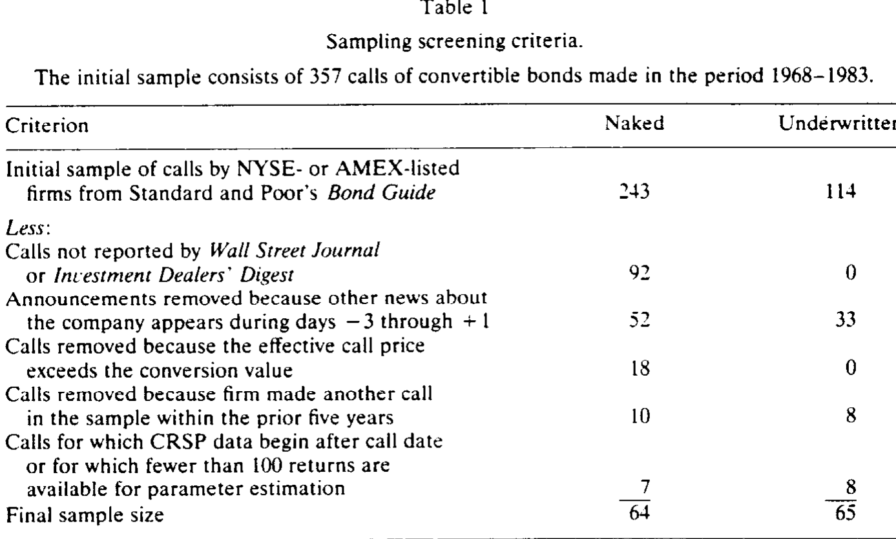
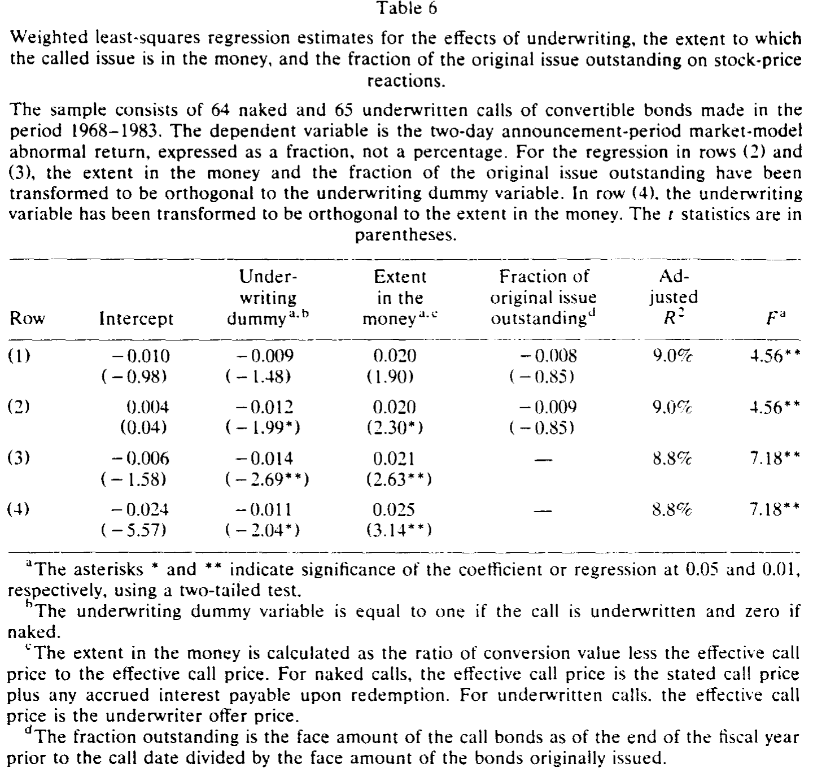
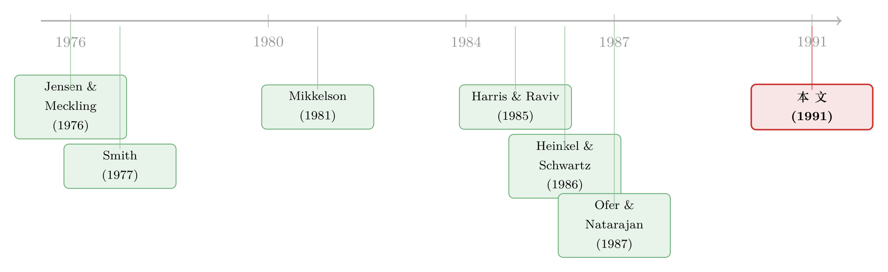

花钱请投行替你赎债，市场为什么反而扣你两个点？
本文读的是 Singh, Cowan & Nayar (1991, Journal of Financial Economics)：当一家公司宣布赎回它的可转债时，如果这次赎回是「找了投行承销」的，股价平均下跌一个统计上显著的 −2%；而如果是公司自己「裸着」赎回，股价只跌了 −0.84%，统计上根本不显著。同一个动作，只因为多请了一个中间人，市场的脸色就完全不同——这背后藏着一条关于「谁更可能用承销商」的信息暗线。
1 一桩"花钱买骂"的怪事
先讲一个看上去毫无道理的现象。
一家公司发行了 可转换债券 (convertible bond)，几年后它想让债主把债换成股票，于是宣布「赎回」（call）。赎回这件事本身并不稀奇——只要可转债已经「价内」（in the money），赎回就能逼着债主乖乖转股，这叫 强制转换 (forcing conversion)。问题在于：很多公司在赎回时，并不满足于自己发个公告，而是额外掏一笔不小的费用，请投资银行来「承销」这次赎回，由投行向所有债主承诺：你们手里的债，我按不低于赎回价的价格统统买下来。
在这篇论文考察的样本里，有整整 32% 的赎回（357 例里的 114 例）都是这样「承销」的。
于是一个自然的问题冒出来了：既然可转债大多数时候稳稳地在价内，赎回几乎不可能失败，那花这笔承销费图什么？更刺眼的是——Mikkelson (1981) 和 Ofer & Natarajan (1987) 早就发现，可转债赎回的公告平均会压低股价。如果承销是为了「保驾护航」、是一件好事，那承销过的赎回理应让股东更安心、股价跌得更少才对。
可作者发现的恰恰相反。承销过的赎回，股价跌得更狠。
这就是全文的张力所在：一个本该「买保险」的动作，市场却把它读成了坏消息。
2 先看清楚：承销商到底在卖什么
要理解市场为什么不买账，得先把「承销一次赎回」这件事的经济实质拆开。
当公司赎回可转债时，债主面对两个选择：要么把债按 有效赎回价 (effective call price, \(CP\)，即票面赎回价加上应计利息) 退给公司，要么按转换比例 \(m\) 把每张债换成 \(m\) 股股票。债主什么时候选转股？只有当转股价值超过赎回价、即债处在价内时：
$$ m \cdot S_L > CP $$
这里 \(S_L\) 是赎回通知期最后一天的股价。
接着，承销商登场。它向公司开出一个承销报价 \(C_{uw}\)，承诺以不低于有效赎回价的价格收购任何被退回的债：
$$ C_{uw} = CP + \varepsilon, \qquad \varepsilon \ge 0 $$
有了这层承诺，债主的处境就变好了：原本他最多拿到 \(\max[CP,\ m\cdot S_L]\)，现在变成了 \(\max[C_{uw},\ m\cdot S_L]\)。承销商把债主的「地板」从赎回价抬到了报价 \(C_{uw}\)。
但天下没有白来的地板。这个地板，是承销商用真金白银扛下来的风险。它收取一笔承销费 \(F_s\)（每张被赎回的债都收，无论是否真要买）和一笔接收费 \(F_t\)（只对它实际买下的债收）。当股价没跌、债在价内（\(m\cdot S_L \ge C_{uw}\)）时，债主自己就转股了，承销商一分钱不用垫，净赚 \(F_s\)；可一旦股价在通知期里跌穿了 \(C_{uw}\)，债主就会把债塞给承销商，承销商被迫以 \(C_{uw}\) 接盘、再到市场上以 \(m\cdot S_L\) 把股票卖掉，于是它的收益变成：
把这条收益曲线画出来你会发现：股价越低，承销商亏得越多——它的损益形状，正是一份卖出的看跌期权 (put option)。作者一句话点透：
在承销一次可转债赎回时，投资银行实质上是在向发行公司出售一份以标的股票为标的的看跌期权。
这个「卖出期权」的视角是全文的钥匙。承销商不是在做慈善，它是在替公司承担「赎回失败、股价崩了、公司得自己掏钱赎债」的尾部风险。（同样的「承销＝卖出看跌期权」直觉，也出现在增发的世界里，可参见《承销商替你做了一道「卖出期权」的算术——日本增发为何不跌反涨》与《新股「打折」不是吃亏，是投行替你卖了一份看跌期权》。）
3 两个对立的故事
既然承销是在买一份「赎回失败保险」，那真正的问题就变成了：什么样的公司会去买这份保险？ 围绕这个问题，作者摆出两个互相对立、却又都自洽的假设。
第一个，是代理成本假设 (agency-cost hypothesis)。 它的源头是 Smith (1977)：经理和投行可能「合谋」，用昂贵的承销方式去做本可以用便宜方式完成的事，从而损害股东、肥了自己（比如投行的回扣、与会计利润挂钩的薪酬）。放到赎回上还有一层：经理的人力资本都押在这家公司上，是风险厌恶的（Amihud & Lev, 1981），他宁可花股东的钱买一份保险，也不愿承担哪怕极小的「赎回失败、陷入财务困境」的风险。如果是这样，承销过的赎回应当跌得更多，而且这批公司的经理「利益与股东不一致」——作者用经理持股比例来检验这一点。
第二个，是股东财富最大化假设 (shareholder-wealth-maximization hypothesis)。 它也有两条腿。一条来自 Heinkel & Schwartz (1986) 的「认证 (certification)」逻辑：承销商只有在仔细审查公司、确认它值这个价之后，才肯卖出那份看跌期权；于是只有被低估或被正确定价的公司才会去做承销赎回，被高估的公司会选择裸赎回——承销本身成了一个「我家底子干净」的信号。另一条来自 Mayers & Smith (1982) 的「公司购买保险」理论：承销商在「短时间内筹集现金」上有比较优势，公司买这项服务能增加股东财富。若如此，承销赎回反而应当带来更正的异常收益。
这里有个漂亮的延伸。Harris & Raviv (1985) 提出，可转债赎回本身就是一个关于公司未来现金流不佳的信号（否则何必急着逼人转股、摊薄股权）。作者把这个信号模型往前推了一步：如果赎回是坏消息，那么「连承销费都愿意掏」的赎回，发出的是一个更强的坏消息——因为只有那些对自家前景最没底、最怕赎回当口出岔子的经理，才舍得为这份保险埋单。
两个假设给出的预测方向不同（代理成本与信号说都预测「更负」，财富最大化预测「更正」），这就让数据有了说话的余地。
4 数据与识别：把"承销"和"裸赎回"放在同一台秤上
作者的样本从 1968 年 1 月到 1983 年 12 月。识别策略其实很「干净」：用 Standard & Poor's Bond Guide 找出 357 例在纽交所或美交所上市公司的可转债赎回，再用 Investment Dealers' Digest 的 Corporate Financing Directory 把其中哪些是承销赎回标出来。股价数据来自 CRSP，财务与债券数据来自 COMPUSTAT 与 Moody's Manuals，高管持股则一份份地从 SEC 的注册与委托书里抠出来。
筛选过程本身就值得一看：剔除并购引发的赎回、未被媒体报道的赎回、公告前后另有新闻干扰的样本、非强制转换（赎回价高于转股价值）的赎回、五年内重复赎回的公司，以及 CRSP 数据不足的公司，最终留下 65 例承销赎回与约 64 例裸赎回（正文一处写作 63，与表 1 的累计相减略有 OCR 出入）。

Table 1
测度股价反应，用的是标准的 事件研究 (event study)：单因子市场模型
$$ R_{jt} = \alpha_j + \beta_j R_{mt} + \varepsilon_{jt} $$
异常收益定义为 \(AR_{jt} = R_{jt} - (\hat\alpha_j + \hat b_j R_{mt})\)。有一个细节值得注意：跟随 Mikkelson (1981)，作者用赎回公告之后的 255 个交易日来估计 \(\alpha,\beta\)，而非通常的事前窗口——因为赎回会改变公司的杠杆与风险结构，用事后数据估参数更稳妥。显著性检验用 Patell (1976) 的标准化方法，并辅以非参数的广义符号检验。
在正式看结果之前，描述统计里已经埋下了伏笔。承销赎回的公司，并没有更高的杠杆（债务/总资本：裸赎回 33.12% vs 承销 24.75%），高管持股也几乎没差别（裸赎回均值 12.33% vs 承销 12.88%，不显著）。但有三处差异很扎眼：承销赎回的债价内程度更浅（赎回价上方的转股价值：裸赎回高出 55.22%，承销仅高出 34.24%，t 检验在 0.01 水平显著）；承销赎回的通知期更短（28.66 天 vs 37.61 天，0.001 水平显著，短通知期本身就压缩了投行的风险暴露）；以及最关键的——承销赎回公司的赎回价占净营运资本的比重更高（均值 87.53% vs 70.35%，中位数 62.50% vs 27.50%，0.01 水平显著）。
最后一条意味着：真要现金赎债，承销赎回的公司流动性会被掏得更空。这恰好印证了「用承销商的经理，是在担心一旦逼不动转股、得自己掏钱赎债」的故事。但请记住，这只解释了为什么买保险，还没回答市场为什么因此扣分。
5 反转：跌的不是"赎回"，是"承销"这两个字
把异常收益算出来，全文的核心结果就摆在桌面上了。
可转债赎回公告整体上压低股价——这一点和前人一致。但真正关键的一步在于：作者把这个负反应拆开后发现，它几乎全部来自承销赎回那一半。 承销赎回的公告期异常收益是一个统计上显著的约 −2%；而裸赎回平均只有 −0.84%，统计上不显著，和零没有区别。换句话说，市场惩罚的并不是「赎回」这个动作本身，而是「这次赎回居然要找投行承销」这个附加信息。债是不是赎回价内得很深、是不是承销，这两个变量一起解释了股价反应的相当一部分。

Table 6
那么，是哪个故事赢了？
财富最大化假设第一个出局：如果承销真的在创造股东价值（认证或保险），承销赎回的收益至少不该比裸赎回更差，可数据是反过来的——作者找不到任何「承销带来更高股东财富」的证据。
剩下代理成本与信号两个解释，数据都「兼容」，但作者的进一步检验把天平推向了信号这一边。代理成本假设有一个可证伪的推论：用承销商的经理，利益应当与股东更不一致——体现为更低的持股。可两组样本的高管持股没有显著差异，持股比例也帮不上解释股价反应的忙。更何况，如果承销费小到可以忽略，那「合谋」根本造不成什么实质损失，代理成本就撑不起这么大的股价差。于是作者的结论落在：经理越是掌握关于公司未来现金流的坏消息，就越可能去用承销商——承销，是一个被市场读懂了的、关于「我心里没底」的信号。代理成本的解释「并非不可能，但并不令人信服」。
这篇论文的姐妹篇——同一批作者把这个故事写成的一则短文——也专门追问了「同一个赎回，为什么承销与否会有两种跌法」，结论同样指向信息而非证券类型（见《同一个赎回，两种跌法——可它跟「是股是债」没关系》）。
6 文献脉络
把这条线索铺开看，它其实站在两条河流的交汇处。
一条河是承销方式的选择。Smith (1977) 最早追问：为什么公司宁可用昂贵的承销发行，也不用便宜得多的配股？他给出了「监督成本—代理成本」的解释。Heinkel & Schwartz (1986) 则把承销重新诠释为一份「认证」——承销商通过给那份看跌期权定价，间接泄露了公司的质量。这条河后来流向了「便宜方法为何没人用」的配股悖论（可参见《便宜的方法没人用：一桩「配股悖论」与它背后的逆向选择》）。
另一条河是可转债赎回的信息含量。Mikkelson (1981) 第一个系统记录了赎回公告的负股价反应；Harris & Raviv (1985) 用一个序贯信号模型解释了它——赎回是公司对未来现金流不乐观的信号；Ofer & Natarajan (1987) 则进一步检验了这个信号假说。

本文的位置，正是把这两条河接到了一起：它借用「承销＝卖出看跌期权」的金融工程视角（第一条河），去切割可转债赎回这个信号事件（第二条河），从而问出一个前人没问的问题——赎回时是否承销，本身是不是一个二阶的信号？ 答案是肯定的。（关于可转债作为「后门股权融资」的更底层动机，可参见《走后门的股票：可转债为什么是一种「不好意思直接增发」的融资》。）
评论与延伸（Q&A + 研究方向）
(a) 几个可能的疑问
Q：承销赎回的债「价内程度更浅」，会不会才是股价跌得更多的真正原因，而跟承销没关系？
这是最该担心的混淆。价内越浅，赎回失败的概率越高，本就更需要承销，也更像坏消息。作者的处理是把「价内程度」和「是否承销」同时放进对股价反应的解释里——两者都解释了一部分。但严格说，承销与价内程度高度内生地绑在一起，本文并没有一个外生变量能把二者干净地分开，这是它识别上的软肋。
Q：用公告之后 255 天估计 β，会不会有问题？
这是跟随 Mikkelson (1981) 的做法，理由是赎回会改变公司的杠杆和风险，用事后数据估出来的参数更贴合事件后的真实风险。代价是，如果赎回当口风险本身在剧烈变化，事后窗口也未必「干净」。好在作者另测了三类风险（总标准差、系统性风险、残差标准差），两组样本都没有显著差异，缓解了这层担忧。
Q：既然找不到「承销增加股东财富」的证据，是不是说认证/保险理论被证伪了？
没有这么强。本文只是说，在可转债赎回这个特定场景里，承销带来的负信号效应盖过了可能存在的认证/保险价值，净效应为负。这不否定认证理论在别的场景（如增发、IPO）里成立。它说明的是：同一个机制，在不同的信息环境下，符号可以反过来。
Q：代理成本假设真的被排除了吗？
更准确的说法是「不被支持」，而非「被排除」。作者的关键证据是两组高管持股没有显著差异，所以「用承销商的经理利益更不一致」这个推论得不到支撑。但持股只是利益一致性的一个代理变量，薪酬结构、在职消费等其他维度本文没看，所以代理成本仍是一个无法被完全否定的备择解释。
Q：承销赎回公司「赎回价/净营运资本」更高，这不正支持了保险/流动性故事吗？
支持的是「经理有动机买保险」，但不支持「买保险增加了股东财富」。这恰恰是本文有意思的地方：经理的私人动机（怕掏不出现金）说得通，可市场并不因此给好评——因为这份「怕」本身，泄露了经理对公司前景的悲观。动机的合理性，不等于对股东是好事。
Q：32% 的赎回都承销，比例不低，这事的经济重要性够大吗？
够。三分之一的可转债赎回都在花这笔承销费，而本文显示这笔钱平均对应着 −2% 的股价反应。无论你把它解读成信号成本还是代理成本，这都是一笔可观的、值得公司金融认真对待的真实现象，而非边角料。
(b) 几个可能的研究问题与提案
1. 把「承销赎回信号」搬到现代公司债/信用市场重做一次。
【经济故事】本文是 1968–1983 的股票事件研究。今天有了 TRACE 的公司债逐笔成交数据，可以直接观察赎回（含可赎回普通公司债的 make-whole call）公告时债券价格与利差怎么动，而不只是股价。如果「承销/中介参与」确实是坏现金流信号，信用利差应当走阔。【可行性】高。TRACE + Mergent FISD 的赎回条款数据齐备，识别用事件研究即可，难点在于现代赎回多为 make-whole、强制转换情形稀少，需重新界定「承销」的对应物。
2. 外资持有人结构是否改变赎回信号的强度？ 【经济故事】信号的「被读懂」依赖于投资者的信息处理能力。如果一只债/股的持有人里外资机构占比高，信息扩散更快，承销赎回的负信号可能被定价得更迅速、更充分。【可行性】中。需要持有人结构数据（如 13F、各国托管数据）与赎回事件匹配，识别上要小心外资占比与公司质量的内生性，可借「指数纳入」之类的外生冲击。
3. 用承销费的横截面变化直接检验「信号成本」。 【经济故事】如果承销是信号，那么前景越差的公司应当愿意付越高的承销费（信号要足够贵才可信）。把承销费率对事后实现的现金流/盈利下滑做回归，能直接检验信号的「分离」结构。【可行性】中。难在历史承销费数据稀疏、且费率谈判受规模等因素干扰，需要手工搜集招股/委托书附带的费用条款。
4. 「承销＝卖出看跌期权」的视角能否用期权定价反推承销费是否「公允」？ 【经济故事】既然承销实质是一份看跌期权，就可以用赎回时的隐含波动率给这份期权定价，再和实际承销费比对——价差就是认证溢价或代理租金的度量。【可行性】中偏低。需要赎回当时的期权或波动率数据（早期样本几乎没有），更适合在 2000 年后的样本上做。
5. 流动性视角：承销赎回是否其实在「购买流动性」？ 【经济故事】本文显示承销赎回公司流动性更紧（赎回价/净营运资本更高）。可以把承销理解为公司在「短期现金筹集」这项流动性服务上向投行付费，进而连到公司持现、信用额度等流动性管理工具的替代关系。【可行性】高。Compustat 的现金、营运资本、信用额度（Capital IQ）数据都有，可做承销赎回前后流动性政策的差分分析。
我的评判
这篇论文最漂亮的地方，是它用一个看似无关紧要的制度细节——「赎回时找没找投行」——切出了一道干净的信息断面。把承销重新理解为「卖出一份看跌期权」，再把这份期权的买方动机翻译成关于未来现金流的信号，逻辑链条短而有力。把财富最大化假设干净利落地排除（找不到任何增值证据），又用高管持股证据把代理成本压下去，最后落在信号解释上，论证是克制而诚实的。
担忧主要在识别。「是否承销」与「债的价内程度」「通知期长短」「流动性紧张程度」高度共线，本文只能把它们一起塞进解释，却拿不出一个外生工具把承销决策单独剥离出来——所以「承销→更负反应」究竟是信号本身，还是这些相关特征的复合，本文无法彻底厘清。样本也偏小（两组各 60 余例），统计功效有限，−0.84% 的「不显著」未必是真的零，可能只是没估准。
后续我最想看到的，是把这套逻辑搬到有 TRACE 和期权数据的现代信用市场：一来可以直接给那份「承销看跌期权」定价、检验承销费公不公允，二来能看债券价格而非仅股价，三来可以引入持有人结构（尤其是外资与被动资金）去检验「信号被读懂的速度」。一个 1991 年关于六十几例赎回的小样本结论，值不值得在今天的大数据里复活，本身就是个好问题。
参考文献
- Amihud, Yakov and Baruch Lev (1981). Risk reduction as a managerial motive for conglomerate mergers. Bell Journal of Economics 12, 605–617.
- Harris, Milton and Artur Raviv (1985). A sequential signalling model of convertible debt call policy. Journal of Finance 40, 1263–1281.
- Heinkel, Robert and Eduardo S. Schwartz (1986). Rights versus underwritten offerings: An asymmetric information approach. Journal of Finance 41, 1–18.
- Jensen, Michael C. and William H. Meckling (1976). Theory of the firm: Managerial behavior, agency costs and ownership structure. Journal of Financial Economics 3, 305–360.
- Mayers, David and Clifford W. Smith, Jr. (1982). On the corporate demand for insurance. Journal of Business 55(2), 281–296.
- Mikkelson, Wayne H. (1981). Convertible calls and security returns. Journal of Financial Economics 9, 237–261.
- Ofer, Aharon R. and Ashok Natarajan (1987). Convertible call policies: An empirical analysis of an information-signalling hypothesis. Journal of Financial Economics 19, 91–108.
- Patell, James M. (1976). Corporate forecasts of earnings per share and stock price behavior: Empirical tests. Journal of Accounting Research 14, 246–276.
- Singh, Ajai K., Arnold R. Cowan and Nandkumar Nayar (1991). Underwritten calls of convertible bonds. Journal of Financial Economics 29, 173–196.
- Smith, Clifford W., Jr. (1977). Alternative methods for raising capital: Rights versus underwritten offerings. Journal of Financial Economics 5, 273–307.